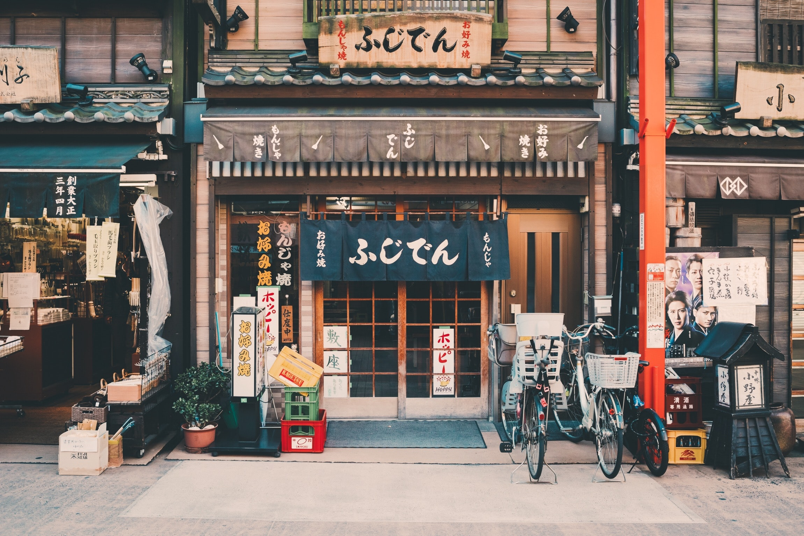
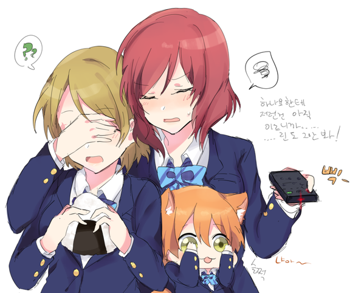

어서오세요. 선택받은 2상sung욕za들이여.
목차
- 일본
- 니들이 좋아하는 거
- 럽라
- 어그로
- 냐루코
- 이오리는 왜 귀여운가?
일본최고
일본 가고싶다.
일본이 왜 최고인지는 자세한 설명은 목차에서 주소를 타고 가주길 바란다.
애니보고 싶다ㅏㅏㅏㅏㅏㅏㅏㅏ
덕질하고 싶다ㅏㅏㅏㅏㅏㅏㅏㅏ

로리는 왜 귀여운가?
이유 따위는 없다. 존나 귀엽다
수인핡
럽라는 왜 좋아하는가?

그냥 보기만 해도 좋음
어그로
미안하다 이거 보여주려고 어그로끌었다.. 나루토 사스케 싸움수준 ㄹㅇ실화냐? 진짜
세계관최강자들의 싸움이다.. 그찐따같던 나루토가 맞나? 진짜 나루토는 전설이다..
진짜 옛날에 맨날나루토봘는데 왕같은존재인 호카게 되서 세계최강 전설적인 영웅이
된 나루토보면 진짜 내가 다 감격스럽고 나루토 노래부터 명장면까지 가슴 울리는
장면들이 뇌리에 스치면서 가슴이 웅장해진다.. 그리고 극장판 에 카카시앞에 운석
날라오는 거대한 걸 사스케가 갑자기 순식간에 나타나서 부숴버리곤 개간지나게 나
루토가 없다면 마을을 지킬 자는 나밖에 없다 라며 바람처럼 사라진장면은 진짜 나
루토 처음부터 본 사람이면 안 울 수가 없더라 진짜 너무 감격스럽고 보루토를 최근
에 알았는데 미안하다.. 지금 20화 보는데 진짜 나루토세대 나와서 너무 감격스럽고
모두 어엿하게 큰 거 보니 내가 다 뭔가 알 수 없는 추억이라 해야되나 그런 감정이
이상하게 얽혀있다.. 시노는 말이 많아진 거 같다 좋은 선생이고..그리고 보루토 왜
욕하냐 귀여운데 나루토를 보는 것같다 성격도 닮았어 그리고 보루토에 나루토 사스
케 둘이 싸워도 이기는 신같은 존재 나온다는게 사실임?? 그리고 인터넷에 쳐봣는디
이거 ㄹㅇㄹㅇ 진짜 팩트냐?? 저적이 보루토에 나오는 신급괴물임?ㅡ 나루토 사스케
합체한 거 봐라 진짜 ㅆㅂ 이거 보고 개충격 먹어가지고 와 소리 저절로 나오더라;;
진짜 저건 개오지는데.. 저게 ㄹㅇ이면 진짜 꼭 봐야돼 진짜 세계도 파괴 시키는 거
아니야 .. 와 진짜 나루토 사스케가 저렇게 되다니 진짜 눈물 나려고했다.. 보루토
그래서 계속 보는 중인데 저거 ㄹㅇ이냐..? 하.. ㅆㅂ 사스케 보고싶다.. 진짜 언제
이렇게 신급 최강들이 되었을까 옛날 생각나고 나 중딩 때 생각나고 뭔가 슬프기도
하고 좋기도하고 감격도하고 여러가지감정이 복잡하네.. 아무튼 나루토는 진짜 애니
중 최거명작임.. 일단 주문받아서 쓰긴 했는데 왜이리 ㅄ같냐

- 자료제공 박희승 -
냐루코

- 자료제공 박희승 - (쿠우코와 냐루코가 굴러다니는 장면)
이오리는 왜 귀여운가?
이오리가 귀여운 이유는 디시인사이드 같은 곳에서도 언급이 되고 있다.
예시1)
예시2)
필자는 이렇게 생각한다. 그냥 이오리라서 귀여운 것이 아닐까? 라고.

- 자료제공 황수명 -
글을 마치며
그닥 쓰고싶은 말은 없기에 이쪽을
참조하길 바람.
그냥 코딩은 꽤 재밌는 듯 ㅇ ㅇ 전세계의 프로그래머들 존경함. 그들의 기분을
알 거 같음.
@혹시 넣고싶은 거 있으면 말하삼 연습삼아 만들어줌